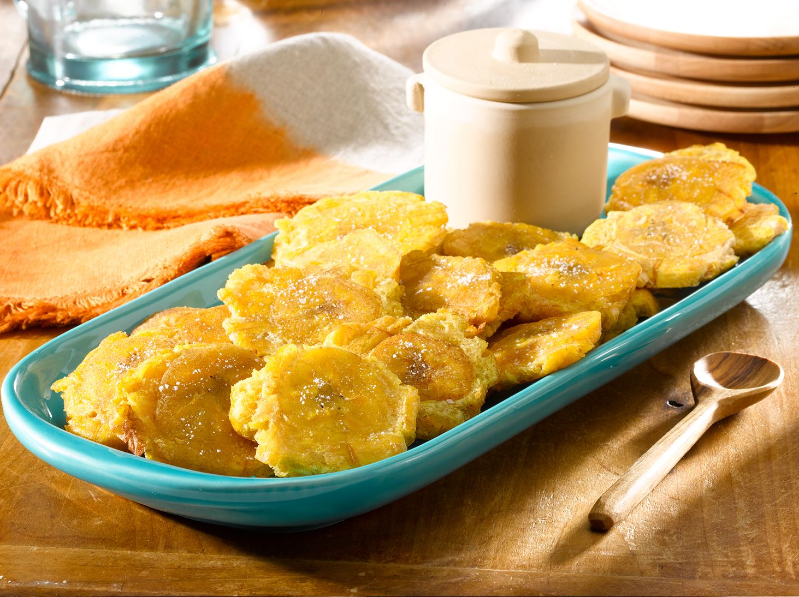

Super yum stuff.
Ingredients
- 2 large green plantains
- vegetable oil for frying
- salt to taste
Steps
- Peel the plantains and cut them into diagonal slices about 3/4 inch thick.
- Heat 1 inch of oil over medium heat in a heavy pot.
- Fry the plantains, flipping them until they are tender but not crisp, about 4 minutes.
- Transfer them to paper towel to drain and cool.
- Smush them flat with a wooden spoon.
- Fry them again, flipping them for about 2 minutes, until they are golden brown.
- Transfer them to paper towel again to drain and cool.
- Sprinkle with salt to taste.
Return to top
Home